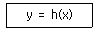
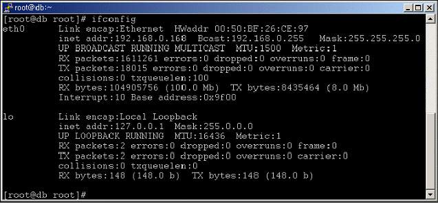
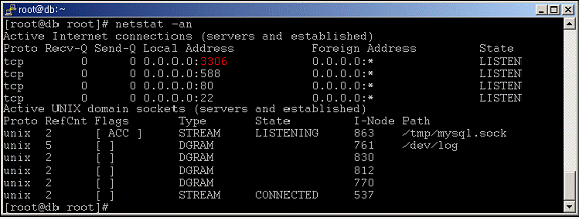
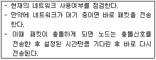
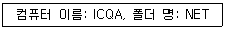
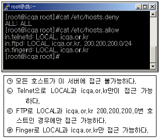
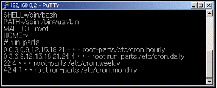
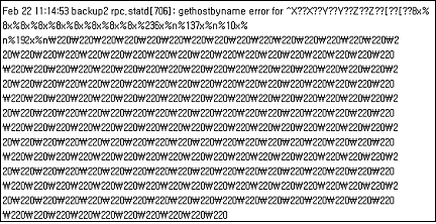

인터넷보안전문가-2급 (2008-09-28 기출문제)
1과목: 정보보호개론
1. RSA 암호화 알고리즘에 대한 설명으로 옳지 않은 것은?
- 공개키 암호화 알고리즘 중 하나이다.
- Rivest 암호화, Adleman이 개발하였다.
- 암호화 속도가 빨라 암호화에 많이 사용된다.
- 전자서명에 이용된다.
(정답률: 50%)

2. 공개키 암호화 방식에 대한 설명으로 옳지 않은 것은?
- 암호화할 때 사용한 키와 복호화 할 때 사용한 키가 같은 암호화 방식이다.
- 공개키 암호 알고리즘은 실질적인 산업계 표준으로 자리 매김하고 있다.
- RSA 공개키 암호 알고리즘의 사용 시 모듈러스의 크기는 1,024 비트 이상이 권고되고 있다.
- 최근 타원 곡선 알고리즘이 암호 속도가 빠르고 용이하여 현재 그 활용 폭이 넓어지고 있다.
(정답률: 알수없음)
3. 데이터암호화표준(DES)에 대한 설명으로 옳지 않은 것은?
- DES의 보안은 암호화 알고리즘의 비밀성에 있지 않다.
- DES의 보안은 주어진 메시지를 암호화 하는데 사용되는 키의 비밀성에 있다.
- DES를 이용한 암호화 기법과 관련 알고리즘을 비밀키 혹은 대칭키 암호화라고 한다.
- 암호화나 해독과정에서 같은 공개키가 사용된다.
(정답률: 28%)
4. 사이버 공간 상에서 사용자의 신원을 증명하기 위한 인증 방식으로 이용하는 정보의 종류로 옳지 않은 것은?
- 자신이 알고 있는 것(패스워드)
- 자신이 소지하는 것(스마트 카드)
- 자신이 선천적으로 가지고 있는 것(지문 등 생체 정보)
- 자신의 사진, 수기 서명의 그림 파일
(정답률: 알수없음)
5. 공인인증서란 인터넷상에서 발생하는 모든 전자거래를 안심하고 사용할 수 있도록 해주는 사이버신분증이다. 공인인증서에 반드시 포함되어야 하는 사항으로 옳지 않은 것은?
- 가입자 이름
- 유효 기간
- 일련 번호
- 용도
(정답률: 90%)
6. 인터넷 보안과 관련된 용어의 설명으로 옳지 않은 것은?
- Virus : 어떤 프로그램이나 시스템에 몰래 접근하기 위하여 함정 같은 여러 가지 방법과 수단을 마련하여 둔다.
- Worm : 자기 스스로를 복사하는 프로그램이며, 일반적으로 특별한 것을 목표로 한 파괴행동은 하지 않는다.
- Trojan Horse : 어떤 행위를 하기 위하여 변장된 모습을 유지하며 코드형태로 다른 프로그램의 내부에 존재한다.
- Spoof : 어떤 프로그램이 마치 정상적인 상태로 유지되는 것처럼 믿도록 속임수를 쓴다.
(정답률: 알수없음)
7. 인적자원에 대한 보안 위협을 최소화하기 위한 방법으로 옳지 않은 것은?
- 기밀 정보를 열람해야 하는 경우에는 반드시 정보 담당자 한 명에게만 전담시키고 폐쇄된 곳에서 정보를 열람 시켜 정보 유출을 최대한 방지한다.
- 기밀 정보를 처리할 때는 정보를 부분별로 나누어 여러 명에게 나누어 업무를 처리하게 함으로서, 전체 정보를 알 수 없게 한다.
- 보안 관련 직책이나 서버 운영 관리자는 순환 보직제를 실시하여 장기 담당으로 인한 정보 변조나 유출을 막는다.
- 프로그래머가 운영자의 직책을 중임하게 하거나 불필요한 외부 인력과의 접촉을 최소화 한다.
(정답률: 알수없음)
8. 일반적으로 시스템 해킹이 일어나는 절차를 올바르게 나열한 것은?
- 정보시스템에 잠입 → 루트권한 취득 → 백도어 설치 → 침입 흔적 삭제
- 루트권한 취득 → 정보시스템에 잠입 → 침입 흔적 삭제 → 백도어 설치
- 정보시스템에 잠입 → 백도어 설치 → 루트권한 취득 → 침입 흔적 삭제
- 백도어 설치 → 정보시스템에 잠입 → 침입 흔적 삭제 → 루트권한 취득
(정답률: 알수없음)
9. 인터넷에서 일어날 수 있는 대표적인 보안사고 유형으로 어떤 침입 행위를 시도하기 위해 일정기간 위장한 상태를 유지하며, 코드 형태로 시스템의 특정 프로그램 내부에 존재 하는 것은?
- 논리 폭탄
- 웜
- 트로이 목마
- 잠입
(정답률: 90%)
10. 다음은 Hash Function의 정의를 나타낸 것이다. 설명으로 옳지 않은 것은?

- x는 가변길이의 메시지이며, y는 고정길이의 해쉬 값(Hash Code)이다.
- 주어진 x에 대하여 y를 구하는 것은 쉽다.
- 주어진 y에 대하여 y = h(x)를 만족하는 x를 찾는 것은 불가능하다.
- 동일한 해쉬 값을 가지는 서로 다른 메시지가 있어야 한다.
(정답률: 30%)
2과목: 운영체제
11. VI(Visual Interface) 명령어 중에서 변경된 내용을 저장한 후 종료하고자 할 때 사용해야 할 명령어는?
- :wq
- :q!
- :e!
- $
(정답률: 알수없음)
12. Linux 시스템에서 파티션 추가 방법인 “Edit New Partition” 내의 여러 항목에 대한 설명으로 옳지 않은 것은?
- Type - 해당 파티션의 파일 시스템을 정할 수 있다.
- Growable - 파티션의 용량을 메가 단위로 나눌 때 실제 하드 디스크 용량과 차이가 나게 된다. 사용 가능한 모든 용량을 잡아준다.
- Mount Point - 해당 파티션을 어느 디렉터리 영역으로 사용할 것인지를 결정한다.
- Size - RedHat Linux 9.0 버전의 기본 Size 단위는 KB이다.
(정답률: 알수없음)
13. Windows 2000 Server의 계정정책 중에서 암호가 필요 없도록 할 경우에 어느 부분을 수정해야 하는가?
- 최근 암호 기억
- 최대 암호 사용기간
- 최소 암호 사용기간
- 최소 암호 길이
(정답률: 알수없음)
14. IIS 웹 서버에서 하루에 평균적으로 방문하는 사용자 수를 설정하는 탭은?
- 성능 탭
- 연결 수 제한 탭
- 연결시간 제한 탭
- 문서 탭
(정답률: 알수없음)
15. Windows 2000 Server의 DNS 서비스 설정에 관한 설명으로 가장 옳지 않은 것은?
- 정방향 조회 영역 설정 후 반드시 역방향 조회 영역을 설정해 주어야 한다.
- Windows 2000 Server는 고정 IP Address를 가져야 한다.
- Administrator 권한으로 설정해야 한다.
- 책임자 이메일 주소의 at(@)은 마침표(.)로 대체된다.
(정답률: 알수없음)
16. Windows 2000 Sever에서 지원하는 PPTP(Point to Point Tunneling Protocol)에 대한 설명으로 옳지 않은 것은?
- PPTP 헤드 압축을 지원한다.
- IPSec를 사용하지 않으면 터널인증을 지원하지 않는다.
- PPP 암호화를 지원한다.
- IP 기반 네트워크에서만 사용가능하다.
(정답률: 알수없음)
17. Windows 2000 Server에서 WWW 서비스에 대한 로그파일이 기록되는 디렉터리 위치는?
- %SystemRoot%\Temp
- %SystemRoot%\System\Logs
- %SystemRoot%\LogFiles
- %SystemRoot%\System32\LogFiles
(정답률: 알수없음)
18. Linux 콘솔 상에서 네트워크 어댑터 “eth0”을 “192.168.1.1” 이라는 주소로 사용하고 싶을 때 올바른 명령은?
- ifconfig eth0 192.168.1.1 activate
- ifconfig eth0 192.168.1.1 deactivate
- ifconfig eth0 192.168.1.1 up
- ifconfig eth0 192.168.1.1 down
(정답률: 알수없음)
19. Linux 시스템에서 한 개의 랜카드에 여러 IP Address를 설정하는 기능은?
- Multi IP
- IP Multi Setting
- IP Aliasing
- IP Masquerade
(정답률: 28%)
20. 아래는 Linux 시스템의 ifconfig 실행 결과이다. 옳지 않은 것은?

- eth0의 OUI 코드는 26:CE:97 이다.
- IP Address는 192.168.0.168 이다.
- eth0가 활성화된 후 현재까지 충돌된 패킷이 없다.
- lo는 Loopback 주소를 의미한다.
(정답률: 46%)
21. Linux 시스템 파일의 설명으로 옳지 않은 것은?
- /etc/passwd - 사용자 정보 파일
- /etc/fstab - 시스템이 시작될 때 자동으로 마운트 되는 파일 시스템 목록
- /etc/motd - 텔넷 로그인 전 나타낼 메시지
- /etc/shadow - 패스워드 파일
(정답률: 알수없음)
22. Linux 시스템을 곧바로 재시작 하는 명령으로 옳지 않은 것은?
- shutdown -r now
- shutdown -r 0
- halt
- reboot
(정답률: 알수없음)
23. Linux에서 /dev 디렉터리에 관한 설명으로 옳지 않은 것은?
- 이 디렉터리는 물리적 용량을 갖지 않는 가상 디렉터리 이다.
- 시스템의 각종 장치들에 접근하기 위한 디바이스 드라이버들이 저장되어 있다.
- 이 디렉터리에는 커널로 로딩 가능한 커널 모듈들이 저장되어 있다.
- 대표적으로 하드디스크 드라이브, 플로피, CD-ROM 그리고 루프 백 장치 등이 존재한다.
(정답률: 알수없음)
24. Windows 2000 Server에서 그룹은 글로벌 그룹, 도메인 그룹, 유니버설 그룹으로 구성되어 있다. 도메인 로컬 그룹에 대한 설명으로 옳지 않은 것은?
- 도메인 로컬 그룹이 생성된 도메인에 위치하는 자원에 대한 허가를 부여할 때 사용하는 그룹이다.
- 내장된 도메인 로컬 그룹은 도메인 제어기에만 존재한다. 이는 도메인 제어기와 Active Directory에서 가능한 권한과 허가를 가지는 그룹이다.
- 내장된 로컬 도메인 그룹은 Print Operators, Account Operators, Server Operators 등이 있다.
- 주로 동일한 네트워크를 사용하는 사용자들을 조직하는데 사용된다.
(정답률: 알수없음)
25. RPM(Redhat Package Management)으로 설치된 모든 패키지를 출력하는 명령어는?
- rpm -qa
- rpm -qf /etc/bashrc
- rpm -qi MySQL
- rpm -e MySQL
(정답률: 50%)
26. Linux 구조 중 다중 프로세스·다중 사용자와 같은 UNIX의 주요 기능을 지원·관리하는 것은?
- Kernel
- Disk Manager
- Shell
- X Window
(정답률: 알수없음)
27. 파일이 생성된 시간을 변경하기 위해 사용하는 Linux 명령어는?
- chown
- chgrp
- touch
- chmod
(정답률: 알수없음)
28. ipchains 프로그램을 이용해서 192.168.1.1의 80번 포트로 향하는 패킷이 아닌 것을 모두 거부하고 싶을 때 input 체인에 어떤 명령을 이용해서 설정해야 하는가?
- ipchains -A input -j DENY -d ! 192.168.1.1 80
- ipchains -A input -j DENY -d 192.168.1.1 ! 80
- ipchains -A input -j DENY -s ! 192.168.1.1 80
- ipchains -A input -j DENY -s 192.168.1.1 ! 80
(정답률: 알수없음)
29. RedHat Linux에서 사용자의 su 명령어 시도 기록을 보려면 어떤 로그를 보아야 하는가?
- /var/log/secure
- /var/log/messages
- /var/log/wtmp
- /var/log/lastlog
(정답률: 알수없음)
30. netstat -an 명령으로 어떤 시스템을 확인한 결과 다음과 같은 결과가 나왔다. 아래 “3306”번 포트는 어떤 데몬이 가동될 때 열리는 포트인가?

- MySQL
- DHCP
- Samba
- Backdoor
(정답률: 알수없음)
3과목: 네트워크
31. LAN에서 사용하는 전송매체 접근 방식으로 일반적으로 Ethernet 이라고 불리는 것은?
- Token Ring
- Token Bus
- CSMA/CD
- Slotted Ring
(정답률: 알수없음)
32. T3 회선에서의 데이터 전송속도는?
- 45Mbps
- 2.048Kbps
- 1.544Mbps
- 65.8Mbps
(정답률: 알수없음)
33. 통신 에러제어는 수신측이 에러를 탐지하여 송신자에게 재전송을 요구하는 ARQ(Automatic Repeat Request)를 이용하게 된다. ARQ 전략으로 옳지 않은 것은?
- Windowed Wait and Back ARQ
- Stop and Wait ARQ
- Go Back N ARQ
- Selective Repeat ARQ
(정답률: 알수없음)
34. Peer-To-Peer 네트워크에 대한 설명으로 옳지 않은 것은?
- Peer는 각각의 네트워크상의 PC를 말한다.
- 일반적으로 서버가 없는 네트워크 형태를 말한다.
- 구축이 간단하고 비용이 적게 든다.
- 다수의 컴퓨터를 연결하기에 적당한 방식이다.
(정답률: 알수없음)
35. 다음의 매체 방식은?

- Token Passing
- Demand Priority
- CSMA/CA
- CSMA/CD
(정답률: 알수없음)
36. 라우팅 되지 않는 프로토콜(Non-Routable Protocol)은?
- TCP/IP, DLC
- NetBEUI, TCP/IP
- IPX/SPX, NetBEUI
- NetBEUI, DLC
(정답률: 알수없음)
37. OSI 7 Layer 중에서 암호, 복호, 인증, 압축 등의 기능이 수행되는 계층은?
- 전송 계층
- 네트워크 계층
- 응용 계층
- 표현 계층
(정답률: 알수없음)
38. IP Address에 대한 설명으로 옳지 않은 것은?
- A Class는 Network Address bit의 8bit 중 선두 1bit는 반드시 0 이어야 한다.
- B Class는 Network Address bit의 8bit 중 선두 2bit는 반드시 10 이어야 한다.
- C Class는 Network Address bit의 8bit 중 선두 3bit는 반드시 110 이어야 한다.
- D Class는 Network Address bit의 8bit 중 선두 4bit는 반드시 1111 이어야 한다.
(정답률: 알수없음)
39. 프로토콜 스택에서 가장 하위 계층에 속하는 것은?
- IP
- TCP
- HTTP
- UDP
(정답률: 알수없음)
40. 서브넷 마스크에 대한 설명으로 올바른 것은?
- DNS 데이터베이스를 관리하고 IP Address를 DNS의 이름과 연결한다.
- IP Address에 대한 네트워크를 분류 또는 구분한다.
- TCP/IP의 자동설정에 사용되는 프로토콜로서 정적, 동적 IP Address를 지정하고 관리한다.
- 서로 다른 네트워크를 연결할 때 네트워크 사이를 연결하는 장치이다.
(정답률: 알수없음)
41. IGRP(Interior Gateway Routing Protocol)의 특징으로 옳지 않은 것은?
- 거리벡터 라우팅 프로토콜이다.
- 메트릭을 결정할 때 고려요소 중 하나는 링크의 대역폭이 있다.
- 네트워크 사이의 라우팅 최적화에 효율적이다.
- 비교적 단순한 네트워크를 위해 개발되었다.
(정답률: 알수없음)
42. 32bit IP Address를 48bit 이더넷 주소로 변환하는 프로토콜은?
- ARP
- RARP
- IGMP
- ICMP
(정답률: 알수없음)
43. 사용되는 계층이 다른 프로토콜은?
- FTP
- SMTP
- HTTP
- IP
(정답률: 알수없음)
44. 인터넷에서는 네트워크와 컴퓨터들을 유일하게 식별하기 위하여 고유한 주소 체계인 인터넷 주소를 사용한다. 다음 중 인터넷 주소에 대한 설명으로 옳지 않은 것은?
- 인터넷 IP Address는 네트워크 주소와 호스트 주소로 구성된다.
- TCP/IP를 사용하는 네트워크에서 각 IP Address는 유일하다.
- 인터넷 IP Address는 네트워크의 크기에 따라 구분되어 지고, 그중 A Class는 가장 많은 호스트를 가지고 있는 큰 네트워크로 할당된다.
- 인터넷 IP Address는 64bit로 이루어지며, 보통 16bit씩 4부분으로 나뉜다.
(정답률: 70%)
45. 환경 변화에 실시간 조정을 하며 문제 해결과 트래픽 최적화를 자동으로 수행하는 라우팅 방식은?
- Static 라우팅
- Dynamic 라우팅
- 최적화 라우팅
- 실시간 라우팅
(정답률: 알수없음)
4과목: 보안
46. 네트워크상에서 아래 경로를 액세스하기 위한 명령 줄의 형식으로 올바른 것은?

- ￦ICQA￦NET
- ￦￦ICQA￦￦NET
- ￦￦ICQA￦NET
- ICQA￦NET
(정답률: 알수없음)
47. IIS를 통하여 Web 서비스를 하던 중 .asp 코드가 외부 사용자에 의하여 소스코드가 유출되는 버그가 발생하였다. 기본적으로 취해야 할 사항으로 옳지 않은 것은?
- 중요 파일(global.asa 등)의 퍼미션을 변경 혹은 파일수정을 통하여 외부로부터의 정보유출 가능성을 제거한다.
- .asp의 권한을 실행권한만 부여한다.
- C:\WINNT\System32\inetsrv\asp.dll에 매칭되어 있는 .asp를 제거한다.
- .asp가 위치한 디렉터리와 파일에서 Read 권한을 제거한다.
(정답률: 알수없음)
48. Windows 2000 Server에서 보안 로그에 대한 설명으로 옳지 않은 것은?
- 보안 이벤트의 종류는 개체 액세스 제어, 계정 관리, 계정 로그온, 권한 사용, 디렉터리 서비스, 로그온 이벤트, 시스템 이벤트, 정책 변경, 프로세스 변경 등이다.
- 보안 이벤트를 남기기 위하여 감사 정책을 설정하여 누가 언제 어떤 자원을 사용했는지를 모니터링 할 수 있다.
- 보안 이벤트에 기록되는 정보는 이벤트가 수행된 시간과 날짜, 이벤트를 수행한 사용자, 이벤트가 발생한 소스, 이벤트의 범주 등이다.
- 데이터베이스 프로그램이나 전자메일 프로그램과 같은 응용 프로그램에 의해 생성된 이벤트를 모두 포함한다.
(정답률: 알수없음)
49. 아래 TCP_Wrapper 설정 내용으로 가장 올바른 것은?

- ㉠, ㉢
- ㉡, ㉣
- ㉠, ㉡, ㉢
- ㉡, ㉢, ㉣
(정답률: 알수없음)
50. 해킹에 성공한 후 해커들이 하는 행동의 유형으로 옳지 않은 것은?
- 추후에 침입이 용이하게 하기 위하여 트로이 목마 프로그램을 설치한다.
- 서비스 거부 공격 프로그램을 설치한다.
- 접속 기록을 추후의 침입을 위하여 그대로 둔다.
- 다른 서버들을 스캔 프로그램으로 스캔하여 취약점을 알아낸다.
(정답률: 알수없음)
51. Linux 시스템에서 여러 가지 일어나고 있는 상황을 기록해 두는 데몬으로, 시스템에 이상이 발생했을 경우 해당 내용을 파일에 기록하거나 다른 호스트로 전송하는 데몬은?
- syslogd
- xntpd
- inet
- auth
(정답률: 알수없음)
52. 서버에 어떤 이상이 생겨서 3시간마다 시스템이 shutdown 되는 이상증세를 보인다, 원인을 찾아보니 crontab 쪽의 설정을 누군가가 수정한 것 같다. 아래 설정 중에 shutdown의 원인이 되는 파일은?

- /etc/cron.hourly
- /etc/cron.daily
- /etc/cron.weekly
- /etc/cron.monthly
(정답률: 알수없음)
53. 침해사고를 당한 시스템에 아래와 같은 로그가 남겨져 있다. 어떠한 공격에 의한 것인가?

- in.lpd를 이용한 버퍼 오버플로우 공격
- DNS Query 버퍼 오버플로우 공격
- amd 버퍼 오버플로우 공격
- rpc.statd을 이용한 버퍼 오버플로우 공격
(정답률: 알수없음)
54. Windows 2000 Server에서 유지하는 중요 로그 유형에 해당하지 않은 것은?
- Firewall Log
- Security Log
- System Log
- Application Log
(정답률: 42%)
55. Apache DSO(Dynamic Shared Object) 모듈에 대한 설명으로 옳지 않은 것은?
- mod_access - 호스트 기반 접근 제어
- mod_auth - 사용자 인증
- mod_imap - IMAP4 프로토콜을 이용한 인증 지원
- mod_mime - 파일 확장자를 이용해 문서 타입을 지정
(정답률: 25%)
56. 악용하고자 하는 호스트의 IP Address를 바꾸어서 이를 통해 해킹하는 기술은?
- IP Spoofing
- Trojan Horse
- DoS
- Sniffing
(정답률: 알수없음)
57. 서비스 거부 공격(DoS)의 특징으로 옳지 않은 것은?
- 루트 권한을 획득하는 권한이다.
- 공격을 받을 경우, 해결할 방안이 매우 힘들다.
- 다른 공격을 위한 사전 공격 방법으로 활용된다.
- 데이터를 파괴하거나, 훔쳐가거나, 변조하는 공격이 아니다.
(정답률: 알수없음)
58. 침입차단시스템에 대한 설명 중 옳지 않은 것은?
- 침입차단시스템은 내부 사설망을 외부의 인터넷으로부터 보호하기 위한 장치이다.
- 패킷 필터링 침입차단시스템은 주로 발신지와 목적지 IP Address와 발신지와 목적지 포트 번호를 바탕으로 IP 패킷을 필터링한다.
- 침입차단시스템의 유형은 패킷 필터링 라우터, 응용 레벨 게이트웨이, 그리고 회선 레벨 게이트웨이 방법 등이 있다.
- 침입차단시스템은 네트워크 사용에 대한 로깅과 통계자료를 제공할 수 없다.
(정답률: 알수없음)
59. SYN Flooding 공격의 대응 방법으로 옳지 않은 것은?
- 빠른 응답을 위하여 백 로그 큐를 줄여 준다.
- ACK 프레임을 기다리는 타임아웃 타이머의 시간을 줄인다.
- 동일한 IP Address로부터 정해진 시간 내에 도착하는 일정 개수 이상의 SYN 요청은 무시한다.
- Linux의 경우, Syncookies 기능을 활성화 한다.
(정답률: 알수없음)
60. 대형 응용 프로그램을 개발하면서 전체 시험실행을 할 때 발견되는 오류를 쉽게 해결하거나 처음부터 중간에 내용을 볼 수 있는 부정루틴을 삽입해 컴퓨터의 정비나 유지 보수를 핑계 삼아 컴퓨터 내부의 자료를 뽑아가는 해킹 행위는?
- Trap Door
- Asynchronous Attacks
- Super Zapping
- Salami Techniques
(정답률: 알수없음)